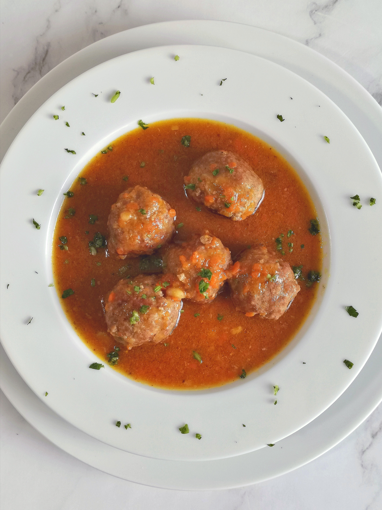

Meatballs

Meatballs by sartenporelmango
This is a simple meatball recipe.
Ingredients
- 1/2 pound ground beef
- 1/2 pound ground pork
- 1/2 C bread crumbs
- 4 Cloves of garlic, minced
- 1/2 White onion, chopped
- 1 egg
- 3/4 C Parmesan cheese
- Salt and Pepper
- 2-3 T Oil
Instructions
- Combine all ingredients except oil in a large mixing bowl.
- Take roughly 2-3 T of mixture and form into balls.
- Heat oil in a large skillet over medium high heat.
- When oil is hot, begin frying meatballs and turn down heat to medium
- Fry for 2-3 minutes, then turn.
- Cook for additional 7-8 minutes, turning occasionally to brown all sides evenly.
- Serve with your favorite sauce and pasta.
Back to recipes